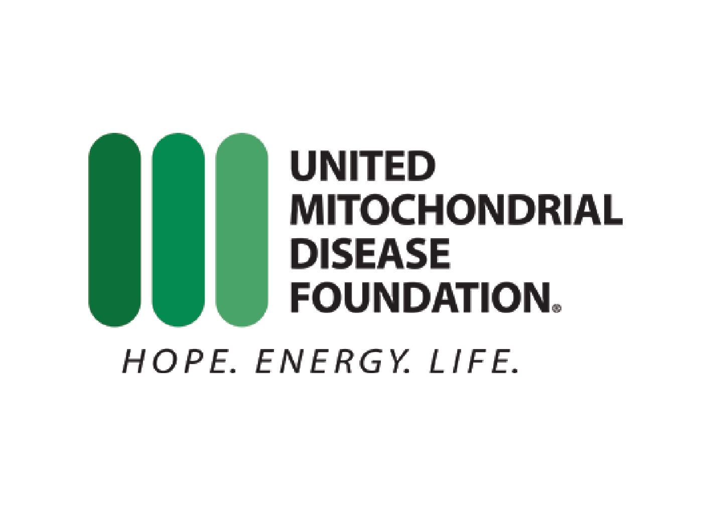

United Mitochondrial Disease Foundation
Team
- Luke Hottinger
- Lois Yang
- Eric Yu
Opportunity
Although UMDF is fairly tech savvy, it has some glaring problems which plague its Path to a Cure site. Upon first glance the site does not provide any indication of what it’s objective is and what it expects the user to do. UMDF is also paying quite a large sum of money per month to host their websites.
Outcomes
We worked in parallel with UMDF on developing their new website on WordPress. While the IS team focused on the design and development of the Path To A Cure donation channel, we provided our clients with hosting and design suggestions in order to improve UMDF’s online presence as a whole. We also aided in the site’s configuration.
Deliverables
The WordPress site with WooCommerce integration, a copy of any custom code we wrote for style or function, any art assets that we created for The Path to a Cure.